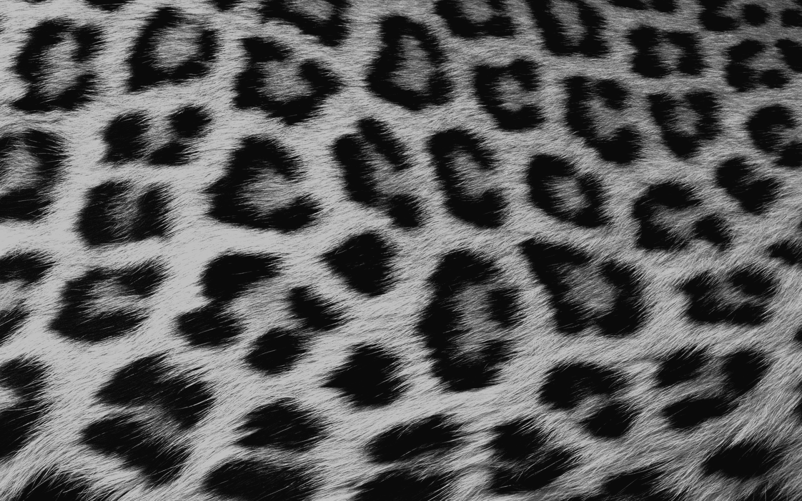

01. tra l'organico e il computazionale
Una prima descrizione del sistema Reaction-Diffusion venne presentata da Alan Turing attraverso The chemical basis of morphogenesis (1952). L'articolo descrive come il processo di sviluppo di determinate forme o strutture organiche è determinato da sistemi di sostanze chimiche chiamate morfogeni. I morfogeni si occupano di governare lo sviluppo dei tessuti nonché il posizionamento di determinate cellule in esso. Turing oltre ad aver evidenziato la questione dal punto di vista biologico, argomentando come questi processi avvengano e definiscano un organismo a partire dalla fase embrionale dello sviluppo, ha fornito anche un'attenta analisi del fenomeno dal punto di vista matematico (Inoltre descrisse come queste strutture, partendo da una situazione di equilibrio, possano sviluppare dei pattern più o meno regolari a partire da dei disturbi randomici e da oscillazioni meccaniche ed elettriche).
02. modelli e pattern
I modelli di Reaction-Diffusion si basano principalmente sull'interazione di 2 soggetti dispersi su un piano. Essi, da un punto di vista biologico, sono considerabili come sostanze chimiche mentre da quello matematico come delle variabili che assumono un valore diverso a seguito della loro stessa elaborazione attraverso una funzione. Quando i soggetti vengono dispersi inizia una reazione di diffusione e conversione tra le due sostanze, con la conseguente generazione di pattern diversi tra loro. Le forme ottenute dipendono da una serie di variabili componenti l'equazione che descrive il modello di Reaction-Diffusion. Questo comportamento è descritto in maniera generale dal modello Gray-Scott e dalle sue due equazioni (una a sostanza), i quali output generano un loop che permette alla reazione e di modificarsi ed avvenire col passare del tempo. Le seguenti equazioni descrivono il modello Gray-Scott:
01. principio
Prima di esaminare tutte le variabili e le operazioni, svolte nelle funzioni del modello Gray-Scott, è necessario comprendere la dinamica tra le due sostanze. All'interno di questo sistema esse si diffondono sul piano e hanno una reazione, che per comodità, è definita come un rapporto di preda e cacciatrice in quanto la sostanza B caccia la sostanza A trasformandola in B. Quando le sostanze A e B vengono aggiunte sul piano hanno due velocità di diffusione diverse, mentre la loro reazione è mantenuta in equilibrio da due variabili chiamate feed e kill rate. In questo modo la sostanza A viene aumentata o aggiunta ad un determinato valore di feed mentre la sostanza B viene rimossa ad un determinato valore di kill impedendo alla sostanza B di eliminare completamente la sostanza A.
02. variabili
01. la base del sistema
Ogni sistema di Reaction-Diffusion viene svolto sulla base di una matrice. Per ogni cella vengono definiti due valori numerici che determinano la concentrazione locale di A e B. Questo calcolo è determinato da delle funzioni laplaciane che operano esattamente come delle matrici di convoluzione, tipologie solitamente utilizzate per ottenere effetti visivi si sharpen, blur o edge-detection. Inoltre, è importante non confondere il concetto di matrice come suddivisione del piano in colonne e righe da quello della matrice intesa come componente delle equazioni che determinano il sistema. La prima permette di circoscrivere l'area nella quale una delle due sostanze risiede, mentre la seconda determina, a partire da un'operazione di convoluzione, il valore di una sostanza presente nell'area esaminata. Nel caso del codice presentato nel playground ho deciso di ridurre la risoluzione della matrice (dapprima impostata sui valori di width e height della finestra) in modo da rendere il calcolo delle funzioni laplaciane più veloce. Per ottenere una rappresentazione a risoluzioni più alte è consigliabile l'utilizzo di linguaggi di programmazione chiamati shader, coì basando la computazione sulla GPU del computer e non sul processore. Il calcolo di modelli Reaction-Diffusion o di altri algoritmi state-based (dipendenti dall'iterazione precedente) risulta più rapido perché i linguaggi di shading riescono a computare in parallelo le funzioni laplaciane per ogni cella / pixel preso in esame. Tuttavia è necessario convertire le equazioni dei modelli per renderle compatibili con questi linguaggi.
02. funzioni laplaciane
Per quanto riguarda le funzioni laplaciane è utile approfondire il loro funzionamento in modo da capire il loro ruolo nella dinamica della diffusione. Le laplaciane funzionano esattamente come delle matrici di convoluzione, sono formate quindi da un kernel che si sovrappone (centro) alla cella della matrice presa in esame ed effettuano una somma pesata dei valori della cella e delle celle adiacenti. Nel caso di quelle presenti nelle equazioni del modello Gray-Scott hanno un'area pari a 3×3 (celle) e dei valori di -1 per il kernel, 0.2 per le celle adiacenti e 0.05 per le celle diagonali. I valori della matrice sono stati selezionati per la loro somma che è uguale a 0 e permettono di mantenere la massa delle sostanze invariata, mentre la loro disposizione è dettata da una convenienza che vede il raggruppamento dei valori maggiori in adiacenza al kernel poichè sono più vicini geometricamente ad esso.
A. M. Turing, The chemical basis of morphogenesis (1952)
Karl Sims, Reaction-Diffusion Tutorial (2013)
Daniel Shiffman, Reaction Diffusion Algorithm (2016)
Arsiliath, Reaction Diffusion: A Visual Explanation (2019)
ciphrd, Reaction Diffusion on shader (2019)
Robert Munafo, Reaction-Diffusion by the Gray-Scott Model (2022)
Jason Webb, Reaction Diffusion playground (2023)
B. Walker, A. Townsend, A. Krause, VisualPDE (2025)
ricerca / progetto grafico di riccardo toniolo
dettaglio della pelle di un pescepalla © National Geographic
dettaglio del manto di un ghepardo
Esempio di un pattern di Tipo theta (θ)
ottenuto nel playground con valori f = 0.044 / k = 0.061
Esempio di un pattern di Tipo mu (μ)
ottenuto nel playground con valori f = 0.046 / k = 0.065
Esempio di un pattern di Tipo xi (ξ)
ottenuto nel playground con valori f = 0.015 / k = 0.045
esempio di reazione con le celle della matrice in evidenza
made-isia 05.2025